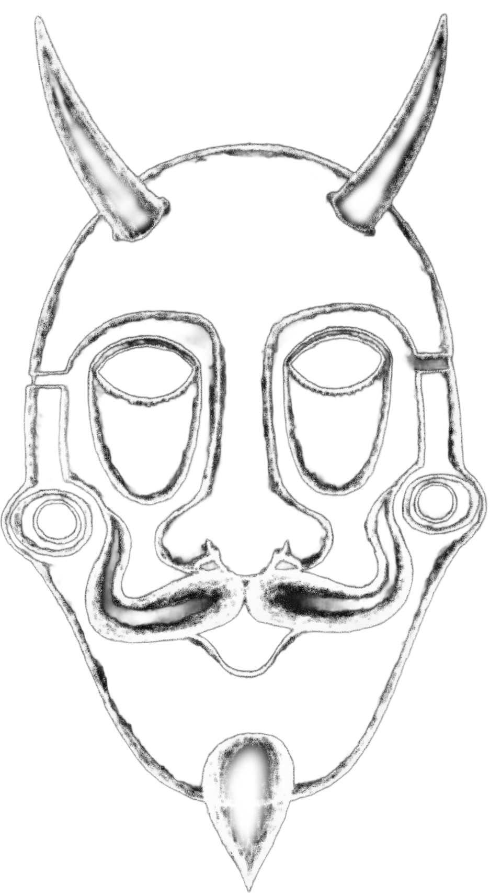

Origen
Noviembre 2018 Tengo 15 años. Estoy de intercambio haciendo 4o de la eso en un pueblo de Irlanda perdido de la mano de Dios. Siempre hace malo. No hay planes ni nada que hacer. Puede ser en parte también porque no me he hecho amigos de verdad. Cada día llego a casa y me cuesta pensar en qué hacer.

demonio.pngMe entretengo escuchando música y dibujando. Dibujo diablillos raros y oscuros porque me empiezo a dar cuenta de que me mola ese rollo. A parte de eso, hablo sólo una barbaridad. Pienso mucho sobre el curso pasado en Bilbao cuando mis amigos de toda la vida me hicieron toa la guarra. Cuando vuelva de Irlanda ya no les veré mas... Al volver de Irlanda me cambio de cole y además, poco antes de irme conocí a gente nueva más worthit. Aún así tengo bastante resentimiento y casi siempre que hablo solo hablo de ese tema.
[ pega aquí tu tercer bloque de texto ]